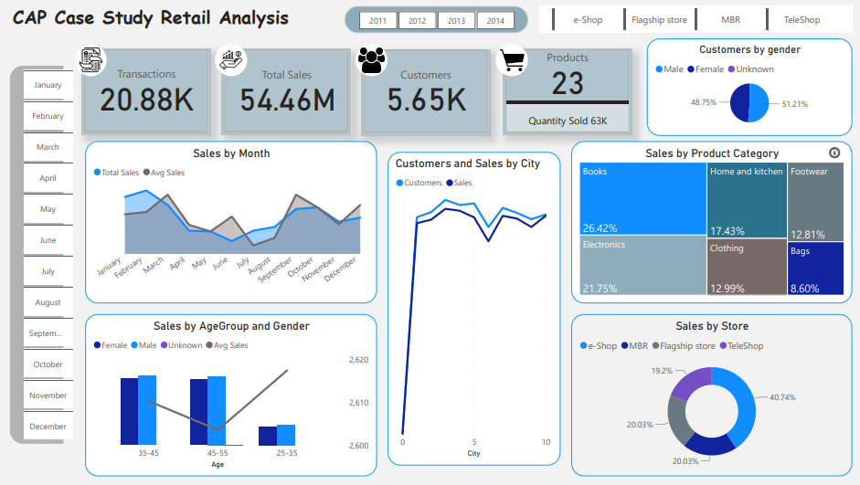
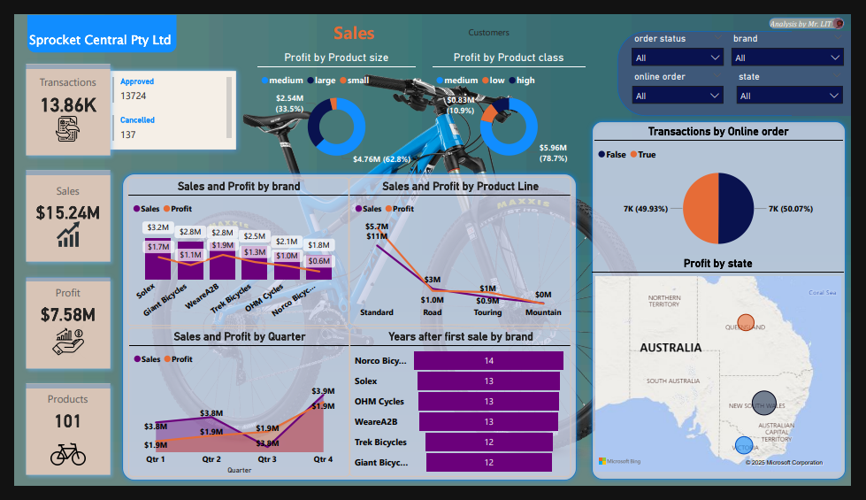
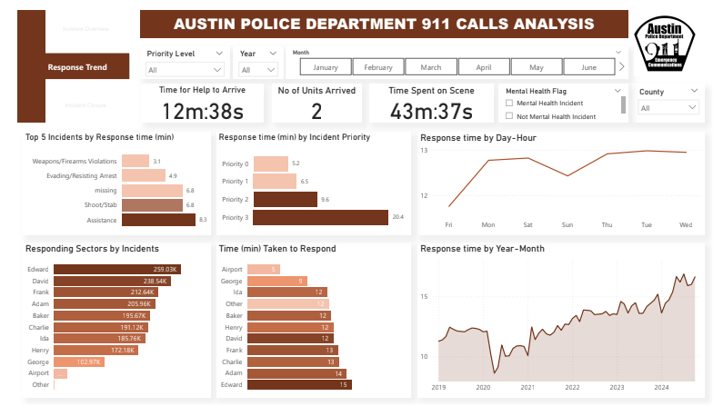
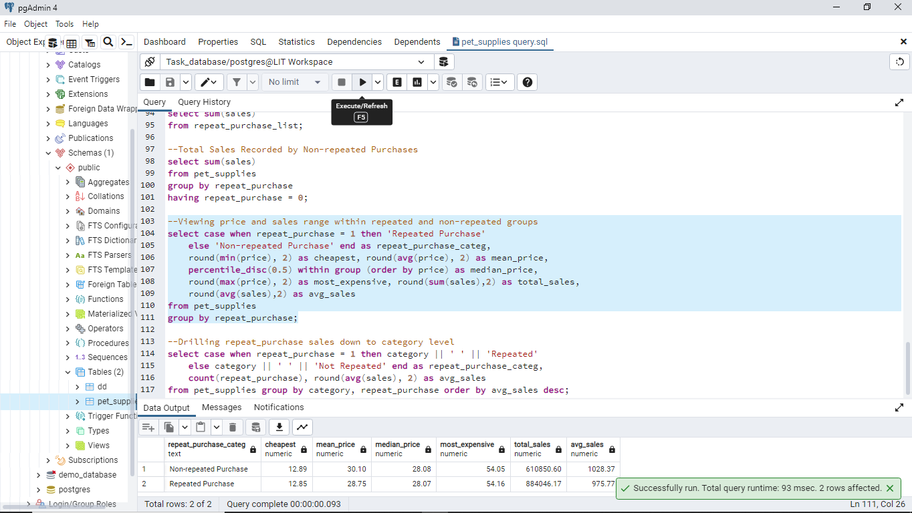
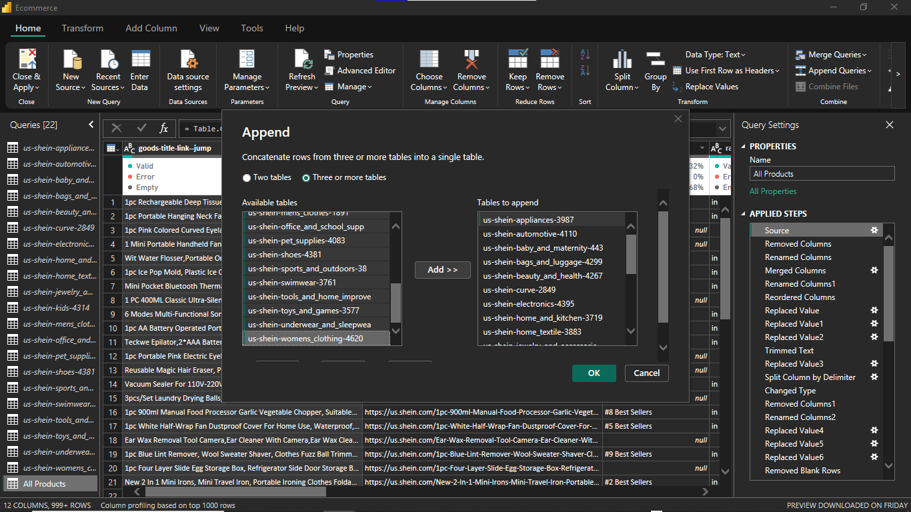
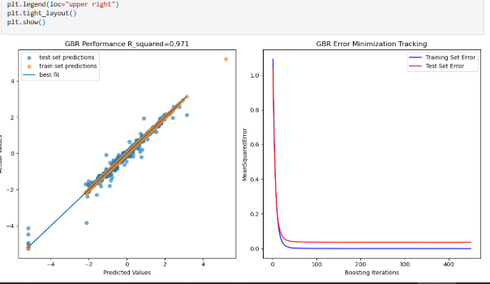

- I contribute to well-perfected data collection, extraction and modelling with my background in Database Management.
- My knowledge of Data Cleaning, Wrangling, Transformation, and Analysis is sure to provide detailed information extraction from data.
- My ability to visualize, communicate and report insights from data to any audience proves to be highly instrumental for data-driven decision-making.
- With a strong quest for learning and high adaptability to new work environments, I'm sure to be an asset.
Business Intelligence for Retail Analytics

This project demonstrates a comprehensive data warehousing and analytics solution, from building a data warehouse, streamlining data to creating actionable dashboards to drive decision-making. It highlights the industry-standard practices in data engineering and analytics to help an organization enhance its analytics capabilities to gain better insights into sales trends, inventory management, and customer behaviour across multiple locations.
Customer Segmentation Analysis

SPROCKET CENTRAL PTY LTD, a company that deals in the sales of bicycles requires that their customers be accurately segmented. An RFM (Recency, Frequency, and Monetary) analysis was done using K-means clustering. Further analysis was done and visualized in Power BI for reportability.

In the bid to help APD improve their services, this project analyses the response trend to emergency calls with focus on various types of incidents of different priorities across different cities.

A pet supplies store looks to improve their sales by drawing insights from their sales record with attention on how sales are repeated and how this affects revenue generation. This project (in partial fulfilment of DataCamp Associate Data Analyst Certification) analyses the sales record to come up with data-driven actionable insights.

This is to showcase an outlined data cleaning process of a dirty E-commerce dataset gotten from kaggle using both Python and Power Query.

This project focuses on the application of python tools to analyze the different factors affecting ticket price variation in the given dataset. Question were answered through EDA and a viable predicion model was developed.
This is aimed at guiding indivuals looking to book a flight in the future on decision making and could also help airlines improve on their services through an "Ease My Trip" website.

It is specifically a predictive modeling optimization project on drug dissolution in supercritical carbon dioxide (SCCO2).
This project focuses on the application of SCCO2 to drug formulation and extraction processes during pharmaceutical production. Estimating the solubility of a drug in SCCO2 helps to guide the formulation of the drug for improved drug delivery, especially for anticancer drugs.

This evaluation is designed to measure the ability to work with relational databases by writing SQL queries to solve business problems.
It shows the knowledge of data retrieval, aggregation, joins, subqueries, and data manipulation across multiple tables.